library(GCFPCA)
library(tidyverse)
library(lme4)
library(refund)
library(mvtnorm)
library(splines)
library(tf) #remotes::install_github("tidyfun/tf", ref = "dev")
library(tidyfun) # remotes::install_github("tidyfun/tidyfun")
library(patchwork)
library(sessioninfo)
theme_set(theme_minimal())
plot_pffr <- function(m) {
layout(t(1:3))
plot(m, select = 1, scheme = 1)
lines(seq(0, 1, length.out = K), f_0(seq(0, 1, length.out = K)), col = 2)
plot(m, select = 2, scheme = 1)
lines(seq(0, 1, length.out = K), f_1(seq(0, 1, length.out = K)), col = 2)
re <- matrix(predict(m, type = "terms")[[3]], ncol = K)
tfd(re) |> plot(ylab = "REs")
}
plot_pffr_nhanes <- function(m) {
layout(t(1:4))
plot(m, select = 1, shift = m$coefficients[1], scheme = 1) #! shift by intercept -- CI will be too tight!
plot(m, select = 2, scheme = 1, scale = 0)
plot(m, select = 3, scheme = 1, scale = 0)
re <- predict(m, type = "terms")[[4]]
matrix(re, ncol = dim(re)[2]) |> tfd() |> plot(ylab = "REs", alpha = .1) #type = "lasagna")
}
plot_pffr_eta <- function(m, sim) {
data <- tibble(
true = sim$df_gcfpca |> select(id, index, eta) |> tfd(),
pred = predict(m, type = "link") |> tfd(arg = tf_arg(true))
) |>
pivot_longer(c(pred, true))
ggplot(data) +
geom_spaghetti(aes(y = value, col = name)) +
facet_wrap(~name)
}
plot_gcfpca <- function(count_model) {
plot_df <- cbind.data.frame(
sind = rep(seq(0, 1, length.out = K), 2),
betahat = c(data.matrix(count_model$betaHat)),
betatrue = c(
f_0(seq(0, 1, length.out = K)),
f_1(seq(0, 1, length.out = K))
),
X = c(
rep("Intercept", K),
rep("X", K)
),
CI_L_pw = c(data.matrix(count_model$CI_L_pw)),
CI_U_pw = c(data.matrix(count_model$CI_U_pw)),
CI_L_joint = c(data.matrix(count_model$CI_L_joint)),
CI_U_joint = c(data.matrix(count_model$CI_U_joint))
) %>%
mutate(X = factor(X, levels = c(
"Intercept",
"X"
)))
plot_df %>%
ggplot(aes(x = sind, y = betahat)) +
geom_ribbon(aes(ymin = CI_L_joint, ymax = CI_U_joint, fill = "CI Joint"), alpha = 0.5) +
geom_ribbon(aes(ymin = CI_L_pw, ymax = CI_U_pw, fill = "CI"), alpha = 0.5) +
geom_line(aes(color = "GCFPCA")) +
geom_line(aes(x = sind, y = betatrue, color = "truth")) +
scale_fill_manual(values = c("CI" = "black", "CI Joint" = "lightgray"), name = "Confidence Interval") +
scale_color_manual(values = c("GCFPCA" = "darkblue", "truth" = "red"), name = "Confidence Interval") +
# Adding a horizontal dotted line at y = 0
geom_hline(yintercept = 0, linetype = "dotted") +
# Setting x-axis labels to show time
scale_x_continuous(breaks = seq(0, 1, by = 0.2)) +
# Facet the plot by variable X, with 3 columns
facet_wrap(~X, ncol = 3, scales = "free_y") +
# Adding axis labels and title
labs(x = "Functional Domain", y = "", fill = "Confidence Interval")
}
plot_gcfpca_eta <- function(m, sim) {
sim$df_gcfpca %>%
mutate(eta_hat = as.vector(m$etas)) %>%
pivot_longer(cols = c(eta, eta_hat)) |>
# filter(id %in% c(1, 2, 8)) %>%
ggplot(aes(x = index, y = value, group = id, col = name)) +
geom_line() +
facet_wrap(~ rev(name))
}
sessioninfo::session_info()## ─ Session info ─────────────────────────────────────────────────────────────────────────────────────────────────────────────────────────────────────────────────────────────────────────────────────────────────────────
## setting value
## version R version 4.4.1 (2024-06-14)
## os Ubuntu 22.04.3 LTS
## system x86_64, linux-gnu
## ui RStudio
## language (EN)
## collate en_US.UTF-8
## ctype en_US.UTF-8
## tz Etc/UTC
## date 2024-12-11
## rstudio 2024.04.2+764 Chocolate Cosmos (server)
## pandoc 3.2 @ /usr/bin/ (via rmarkdown)
##
## ─ Packages ─────────────────────────────────────────────────────────────────────────────────────────────────────────────────────────────────────────────────────────────────────────────────────────────────────────────
## ! package * version date (UTC) lib source
## abind 1.4-5 2016-07-21 [2] RSPM (R 4.4.0)
## backports 1.5.0 2024-05-23 [2] RSPM (R 4.4.0)
## bitops 1.0-7 2021-04-24 [1] RSPM (R 4.4.0)
## boot 1.3-30 2024-02-26 [3] CRAN (R 4.4.1)
## bslib 0.7.0 2024-03-29 [2] RSPM (R 4.4.0)
## cachem 1.1.0 2024-05-16 [2] RSPM (R 4.4.0)
## checkmate 2.3.1 2023-12-04 [1] RSPM (R 4.4.0)
## cli 3.6.2 2023-12-11 [2] RSPM (R 4.4.0)
## cluster 2.1.6 2023-12-01 [3] CRAN (R 4.4.1)
## codetools 0.2-20 2024-03-31 [3] CRAN (R 4.4.1)
## colorspace 2.1-0 2023-01-23 [2] RSPM (R 4.4.0)
## crayon 1.5.2 2022-09-29 [2] RSPM (R 4.4.0)
## deSolve 1.40 2023-11-27 [1] RSPM (R 4.4.0)
## digest 0.6.35 2024-03-11 [2] RSPM (R 4.4.0)
## doParallel * 1.0.17 2022-02-07 [1] RSPM (R 4.4.0)
## dplyr * 1.1.4 2023-11-17 [2] RSPM (R 4.4.0)
## evaluate 0.24.0 2024-06-10 [2] RSPM (R 4.4.0)
## fansi 1.0.6 2023-12-08 [2] RSPM (R 4.4.0)
## fastmap 1.2.0 2024-05-15 [2] RSPM (R 4.4.0)
## fda 6.1.8 2024-03-09 [1] RSPM (R 4.4.0)
## fds 1.8 2018-10-31 [1] RSPM (R 4.4.0)
## forcats * 1.0.0 2023-01-29 [2] RSPM (R 4.4.0)
## foreach * 1.5.2 2022-02-02 [1] RSPM (R 4.4.0)
## gamm4 0.2-6 2020-04-03 [1] RSPM (R 4.4.0)
## GCFPCA * 0.0.0.9000 2024-12-06 [1] local
## generics 0.1.3 2022-07-05 [2] RSPM (R 4.4.0)
## GGally 2.2.1 2024-02-14 [1] RSPM (R 4.4.0)
## ggplot2 * 3.5.1 2024-04-23 [2] RSPM (R 4.4.0)
## ggstats 0.7.0 2024-09-22 [1] RSPM (R 4.4.0)
## glue 1.7.0 2024-01-09 [2] RSPM (R 4.4.0)
## grpreg 3.4.0 2021-07-26 [1] RSPM (R 4.4.0)
## gtable 0.3.5 2024-04-22 [2] RSPM (R 4.4.0)
## hdrcde 3.4 2021-01-18 [1] RSPM (R 4.4.0)
## here * 1.0.1 2020-12-13 [2] RSPM (R 4.4.0)
## hms 1.1.3 2023-03-21 [2] RSPM (R 4.4.0)
## htmltools 0.5.8.1 2024-04-04 [2] RSPM (R 4.4.0)
## iterators * 1.0.14 2022-02-05 [1] RSPM (R 4.4.0)
## jquerylib 0.1.4 2021-04-26 [2] RSPM (R 4.4.0)
## jsonlite 1.8.8 2023-12-04 [2] RSPM (R 4.4.0)
## KernSmooth 2.23-24 2024-05-17 [3] CRAN (R 4.4.1)
## knitr 1.47 2024-05-29 [2] RSPM (R 4.4.0)
## ks 1.14.2 2024-01-15 [1] RSPM (R 4.4.0)
## lattice 0.22-6 2024-03-20 [3] CRAN (R 4.4.1)
## lifecycle 1.0.4 2023-11-07 [2] RSPM (R 4.4.0)
## lme4 * 1.1-35.5 2024-07-03 [1] RSPM (R 4.4.0)
## lubridate * 1.9.3 2023-09-27 [2] RSPM (R 4.4.0)
## magic 1.6-1 2022-11-16 [1] RSPM (R 4.4.0)
## magrittr 2.0.3 2022-03-30 [2] RSPM (R 4.4.0)
## VP MASS 7.3-60.2 2024-06-13 [3] RSPM (R 4.4.0) (on disk 7.3.61)
## Matrix * 1.7-0 2024-04-26 [3] CRAN (R 4.4.1)
## mclust 6.1.1 2024-04-29 [1] RSPM (R 4.4.0)
## mgcv 1.9-1 2023-12-21 [3] CRAN (R 4.4.1)
## minqa 1.2.8 2024-08-17 [1] RSPM (R 4.4.0)
## munsell 0.5.1 2024-04-01 [2] RSPM (R 4.4.0)
## mvtnorm * 1.2-5 2024-05-21 [2] RSPM (R 4.4.0)
## VP nlme 3.1-164 2024-06-06 [3] RSPM (R 4.4.0) (on disk 3.1.165)
## nloptr 2.1.1 2024-06-25 [1] RSPM (R 4.4.0)
## patchwork * 1.2.0 2024-01-08 [1] RSPM (R 4.4.0)
## pbs 1.1 2013-06-08 [1] RSPM (R 4.4.0)
## pcaPP 2.0-5 2024-08-19 [1] RSPM (R 4.4.0)
## pillar 1.9.0 2023-03-22 [2] RSPM (R 4.4.0)
## pkgconfig 2.0.3 2019-09-22 [2] RSPM (R 4.4.0)
## plyr 1.8.9 2023-10-02 [2] RSPM (R 4.4.0)
## pracma 2.4.4 2023-11-10 [1] RSPM (R 4.4.0)
## purrr * 1.0.2 2023-08-10 [2] RSPM (R 4.4.0)
## R6 2.5.1 2021-08-19 [2] RSPM (R 4.4.0)
## rainbow 3.8 2024-01-23 [1] RSPM (R 4.4.0)
## RColorBrewer 1.1-3 2022-04-03 [2] RSPM (R 4.4.0)
## VP Rcpp 1.0.12 2024-07-17 [2] RSPM (R 4.4.0) (on disk 1.0.13)
## RCurl 1.98-1.14 2024-01-09 [1] RSPM (R 4.4.0)
## readr * 2.1.5 2024-01-10 [2] RSPM (R 4.4.0)
## refund * 0.1-35 2024-02-14 [1] RSPM (R 4.4.0)
## rlang 1.1.4 2024-06-04 [2] RSPM (R 4.4.0)
## RLRsim 3.1-8 2022-03-16 [1] RSPM (R 4.4.0)
## rmarkdown 2.27 2024-05-17 [2] RSPM (R 4.4.0)
## rprojroot 2.0.4 2023-11-05 [2] RSPM (R 4.4.0)
## rstudioapi 0.16.0 2024-03-24 [2] RSPM (R 4.4.0)
## sass 0.4.9 2024-03-15 [2] RSPM (R 4.4.0)
## scales 1.3.0 2023-11-28 [2] RSPM (R 4.4.0)
## sessioninfo * 1.2.2 2021-12-06 [2] RSPM (R 4.4.0)
## stringi 1.8.4 2024-05-06 [2] RSPM (R 4.4.0)
## stringr * 1.5.1 2023-11-14 [2] RSPM (R 4.4.0)
## tf * 0.3.5 2024-12-06 [1] Github (tidyfun/tf@e1f25dc)
## tibble * 3.2.1 2023-03-20 [2] RSPM (R 4.4.0)
## tidyfun * 0.0.98 2024-12-06 [1] Github (tidyfun/tidyfun@cb4e8d7)
## tidyr * 1.3.1 2024-01-24 [2] RSPM (R 4.4.0)
## tidyselect 1.2.1 2024-03-11 [2] RSPM (R 4.4.0)
## tidyverse * 2.0.0 2023-02-22 [2] RSPM (R 4.4.0)
## timechange 0.3.0 2024-01-18 [2] RSPM (R 4.4.0)
## tzdb 0.4.0 2023-05-12 [2] RSPM (R 4.4.0)
## utf8 1.2.4 2023-10-22 [2] RSPM (R 4.4.0)
## vctrs 0.6.5 2023-12-01 [2] RSPM (R 4.4.0)
## withr 3.0.0 2024-01-16 [2] RSPM (R 4.4.0)
## xfun 0.44 2024-05-15 [2] RSPM (R 4.4.0)
## yaml 2.3.8 2023-12-11 [2] RSPM (R 4.4.0)
## zoo 1.8-12 2023-04-13 [2] RSPM (R 4.4.0)
##
## [1] /dss/dsshome1/lxc04/ri68suz2/R/x86_64-pc-linux-gnu-library/4.4
## [2] /usr/local/lib/R/site-library
## [3] /usr/local/lib/R/library
##
## V ── Loaded and on-disk version mismatch.
## P ── Loaded and on-disk path mismatch.
##
## ────────────────────────────────────────────────────────────────────────────────────────────────────────────────────────────────────────────────────────────────────────────────────────────────────────────────────────sessionInfo()$BLAS## [1] "/usr/lib/x86_64-linux-gnu/openblas-pthread/libblas.so.3"sessionInfo()$LAPACK## [1] "/usr/lib/x86_64-linux-gnu/openblas-pthread/libopenblasp-r0.3.20.so"# simulate data
library(splines)
I <- 100
K <- 500
# simulate data and save results
set.seed(1312)
# set true fixed effects
theta_0 <- rnorm(10 + 4, sd = 1) |> scale(scale = FALSE) #ensure mean 0
theta_1 <- rnorm(10 + 4, sd = 1)
# set true fixed effects
f_0 <- function(s) bs(s, knots = seq(0.1, 0.9, len = 10), Boundary.knots = c(0, 1), intercept = TRUE) %*% theta_0
f_1 <- function(s) bs(s, knots = seq(0.1, 0.9, len = 10), Boundary.knots = c(0, 1), intercept = TRUE) %*% theta_1
count_sim <- gcfpca_simu(
I = I, K = K, family = "poisson",
beta0_true = f_0, beta1_true = f_1,
fe_case = 2, re_case = 2
)# use binwidth for 30 intervals to (roughly) compare with pffr model of similar
# coef-dimension using 25-40 basis functions:
gc_fpca_count_time <- system.time(
count_model <- gc_fpca(
formula = Y ~ X + (1 | id),
data = count_sim$df_gcfpca,
binwidth = K / 30,
family = "poisson",
#! if you supply *both* pve & npc you always get npc PCs from face
pve = 0.95, npc = 4, periodicity = FALSE
)
)## Warning in checkConv(attr(opt, "derivs"), opt$par, ctrl = control$checkConv, : Model failed to converge with max|grad| = 0.0721611 (tol = 0.002, component 1)## Warning in checkConv(attr(opt, "derivs"), opt$par, ctrl = control$checkConv, : Model is nearly unidentifiable: very large eigenvalue
## - Rescale variables?gc_fpca_count_time## user system elapsed
## 62.624 2.045 62.288count_sim_pffr <- tf_nest(count_sim$df_gcfpca, Y, eta, .id = id, .arg = index)
count_sim_pffr$Y_mat <- as.matrix(count_sim_pffr$Y)
pffr_count_re_time <- system.time({
pffr_count_re <- pffr(
Y_mat ~ X +
s(id, bs = "re", bs.yindex = list(k = 10, bs = "cr")), # GC-FPCA uses 4 FPCs for this
data = count_sim_pffr, family = "poisson",
bs.int = list(k = 30, bs = "cr"), bs.yindex = list(k = 30, bs = "cr"),
yind = tf_arg(count_sim_pffr$Y),
algorithm = "bam", method = "fREML", discrete = TRUE
)
})
pffr_count_re_time## user system elapsed
## 34.331 7.725 29.391pffr_count_pcre_time <- system.time({
pffr_count_pilot <- pffr(Y_mat ~ X,
data = count_sim_pffr, family = "poisson",
bs.int = list(k = 30, bs = "cr"), bs.yindex = list(k = 30, bs = "cr"),
yind = tf_arg(count_sim_pffr$Y),
algorithm = "bam", method = "fREML", discrete = TRUE
)
count_fpc_e <- resid(pffr_count_pilot) |>
fpca.face(pve = .95, knots = 20, lower = 0) # as in gc_fpca
count_efuns <- count_fpc_e$efunctions
count_evalues <- count_fpc_e$evalues
pffr_count_pcre <- pffr(
Y_mat ~ X +
pcre(
id = id, efunctions = count_efuns,
evalues = count_evalues, yind = tf_arg(count_sim_pffr$Y)
),
data = count_sim_pffr, family = "poisson",
bs.int = list(k = 30, bs = "cr"), bs.yindex = list(k = 30, bs = "cr"),
yind = tf_arg(count_sim_pffr$Y),
algorithm = "bam", method = "fREML", discrete = TRUE
)
})
pffr_count_pcre_time## user system elapsed
## 59.059 8.611 61.629save.image(file = here::here("gfamm-checks-sim.RData"))
plot_gcfpca(count_model) /
plot_gcfpca_eta(count_model, count_sim)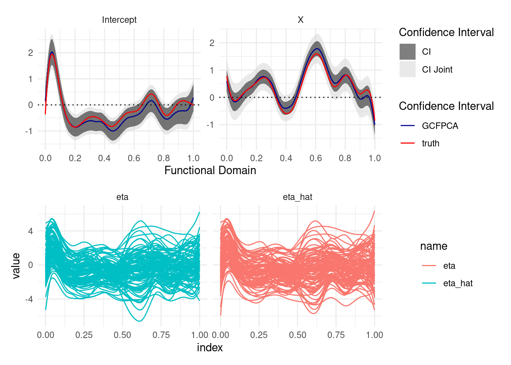
plot_pffr(pffr_count_re)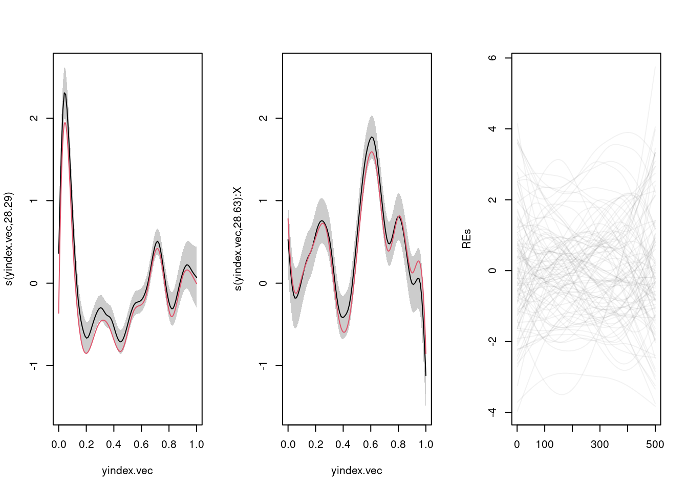
plot_pffr_eta(pffr_count_re, count_sim)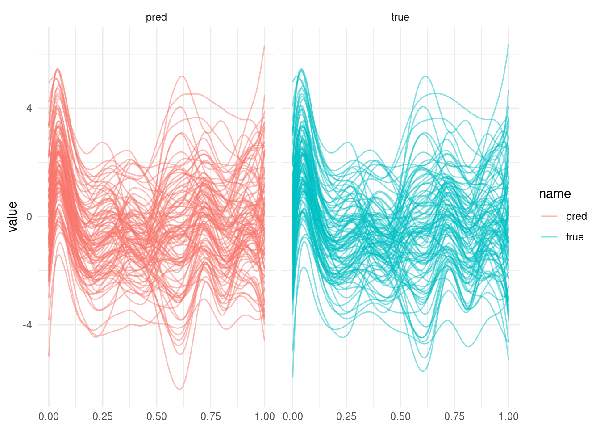
plot_pffr(pffr_count_pcre)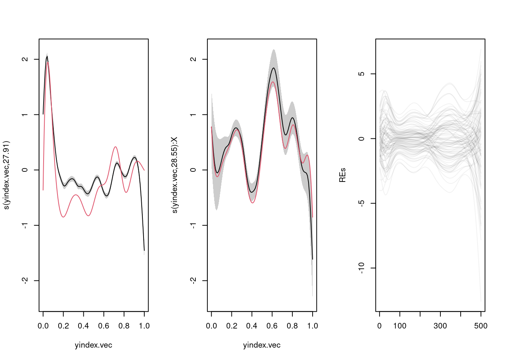
plot_pffr_eta(pffr_count_pcre, count_sim)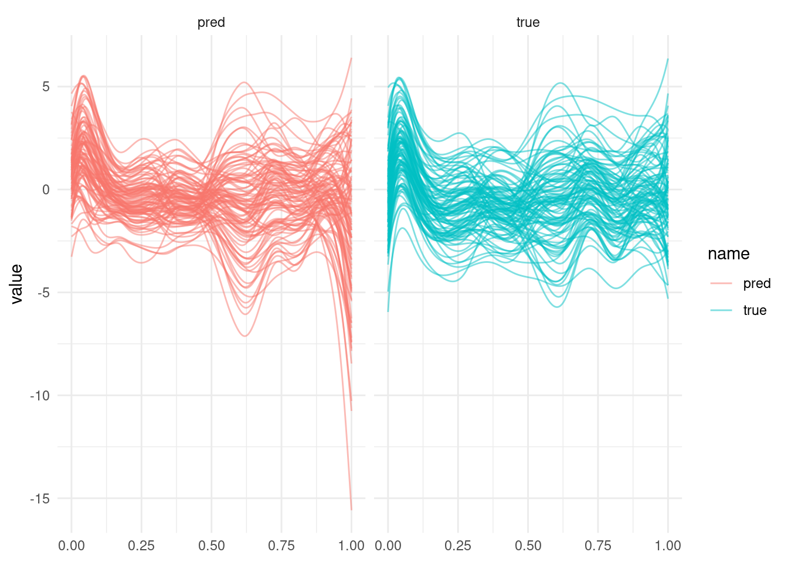
## ----df_long-------------------------------------------------------------------------------------
df_long <- readRDS(here::here("data/df_long.rds"))
## ----nhanes_gcfpca, warning=FALSE, message=FALSE-------------------------------------------------
gcfpca_start_t <- Sys.time()
nhanes_gcfpca <- gc_fpca(
formula = mims ~ age + gender + (1 | id),
data = df_long,
binwidth = 30,
family = "binomial",
pve = 0.95, npc = 4, periodicity = TRUE
)
gcfpca_end_t <- Sys.time()
gcfpca_time_diff <- as.double(difftime(gcfpca_end_t, gcfpca_start_t, units = "mins"))
gcfpca_time_diff## [1] 36.21107I <- length(unique(df_long$id))
K <- length(unique(df_long$index))
df_pffr <- data.frame(
Y = I(matrix(df_long$mims, I, K, byrow = TRUE)),
id = factor(unique(df_long$id)),
age = df_long$age[!duplicated(df_long$id)],
gender = df_long$gender[!duplicated(df_long$id)]
)
pffr_start_t <- Sys.time()
# changes:
# - k to 10/30 because overkill otherwise
# - basis to "cc" to mimic periodicity = TRUE
pffr_model_re <- pffr(Y ~ age + gender + s(id, bs = "re", bs.yindex = list(bs = "cc", k = 10)),
algorithm = "bam", method = "fREML", discrete = TRUE,
bs.yindex = list(bs = "cc", k = 30),
bs.int = list(bs = "cc", k = 30),
data = df_pffr,
family = "binomial", yind = sort(unique(df_long$index))
)
pffr_end_t <- Sys.time()
pffr_re_time_diff <- as.double(difftime(pffr_end_t, pffr_start_t, units = "mins"))
pffr_re_time_diff## [1] 0.2148644plot_pffr_nhanes(pffr_model_re)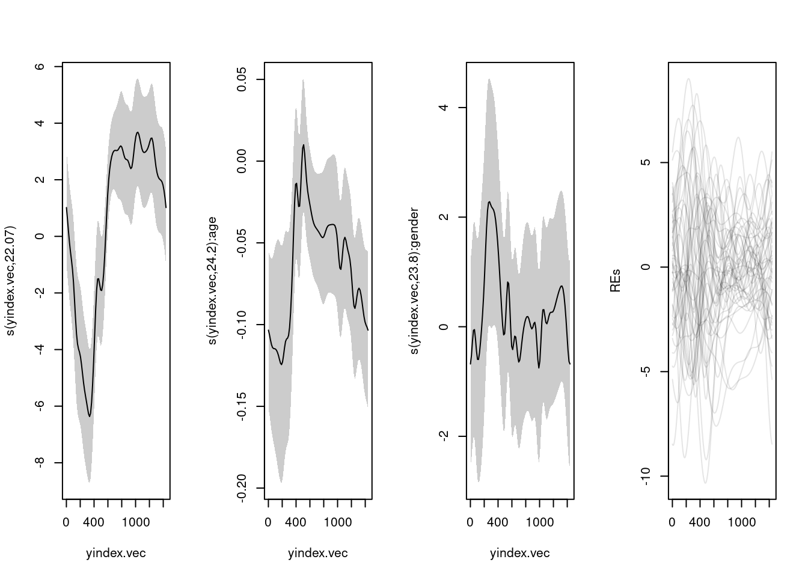
pffr_start_t <- Sys.time()
pffr_model_pilot <- pffr(Y ~ age + gender,
algorithm = "bam", method = "fREML", discrete = TRUE,
bs.yindex = list(bs = "cc", k = 30),
bs.int = list(bs = "cc", k = 30),
data = df_pffr,
family = "binomial", yind = sort(unique(df_long$index))
)
nhanes_fpc_e <- resid(pffr_model_pilot) |> fpca.face(npc = 4) # would need ~11 FPCs for 90% "PVE"
nhanes_efuns <- nhanes_fpc_e$efunctions
nhanes_evalues <- nhanes_fpc_e$evalues
system.time(pffr_model_pc <- pffr(
Y ~ age + gender +
pcre(
id = id, efunctions = nhanes_efuns,
evalues = nhanes_evalues, yind =sort(unique(df_long$index))
),
algorithm = "bam", method = "fREML", discrete = TRUE,
bs.yindex = list(bs = "cc", k = 30),
bs.int = list(bs = "cc", k = 30),
data = df_pffr,
family = "binomial", yind = sort(unique(df_long$index))
))## user system elapsed
## 26.972 8.826 28.547pffr_end_t <- Sys.time()
(pffr_pc_time_diff <- as.double(difftime(pffr_end_t, pffr_start_t, units = "mins")))## [1] 0.4881677save.image(file = here::here("gfamm-checks-full.RData"))
plot_pffr_nhanes(pffr_model_pc)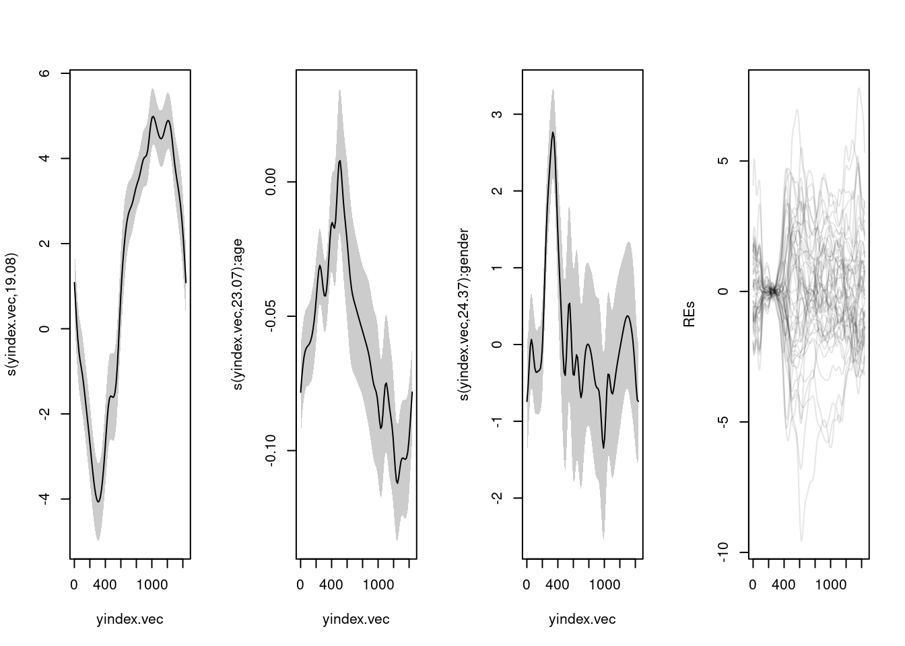
AIC(pffr_model_pc)## [1] 47279AIC(pffr_model_re)## [1] 44290.24AIC(nhanes_gcfpca$model)## [1] 46620.09pffr_model <- pffr_model_re
sind = sort(unique(df_long$index))
df_pred <- data.frame("yindex.vec" = sind,
id = as.numeric(levels(df_long$id))[1],
id.vec = as.numeric(levels(df_long$id))[1],
age = 1, gender = 1)
betahat_pffr <- mgcv::predict.gam(pffr_model, newdata=df_pred, type='iterms', se.fit=TRUE)
CI_L_pffr <- betahat_pffr[[1]] - 1.96 * betahat_pffr[[2]]
CI_U_pffr <- betahat_pffr[[1]] + 1.96 * betahat_pffr[[2]]
#! shouldn't the intercept functions for pffr be shifted by the constant Intercept?rm()=
eta_pffr <- matrix(pffr_model$linear.predictors, nrow = length(unique(df_long$id)),
ncol = length(unique(df_long$index)))
## ----plot_nhanes_fe, echo = TRUE, fig.show='hold'------------------------------------------------
plot_df <- cbind.data.frame(sind = rep(seq(0, 1, length.out = K), 3),
betahat = c(data.matrix(nhanes_gcfpca$betaHat)),
betahat_pffr = c(data.matrix(betahat_pffr[[1]][, -4])),
X = c(rep("Intercept", K),
rep("Age", K),
rep("Gender", K)),
CI_L_pw = c(data.matrix(nhanes_gcfpca$CI_L_pw)),
CI_U_pw = c(data.matrix(nhanes_gcfpca$CI_U_pw)),
CI_L_joint = c(data.matrix(nhanes_gcfpca$CI_L_joint)),
CI_U_joint = c(data.matrix(nhanes_gcfpca$CI_U_joint)),
CI_L_pffr = c(CI_L_pffr[, -4]),
CI_U_pffr = c(CI_U_pffr[, -4])) %>%
mutate(X = factor(X, levels = c("Intercept",
"Age",
"Gender")))
plot_df %>%
ggplot(aes(x = sind, y = betahat)) +
#geom_ribbon(aes(ymin = CI_L_joint, ymax = CI_U_joint, fill = "CI Joint"), alpha = 0.5) +
geom_ribbon(aes(ymin = CI_L_pw, ymax = CI_U_pw, fill = "CI"), alpha = 0.3) +
geom_ribbon(aes(ymin = CI_L_pffr, ymax = CI_U_pffr, fill = "CI pffr"), alpha = 0.5) +
geom_line(aes(color = "GCFPCA")) +
geom_line(aes(x = sind, y = betahat_pffr, color = "pffr classic")) +
scale_fill_manual(values = c("CI" = "blue", "CI Joint" = "lightblue", "CI pffr" = "pink"), name = "Confidence Interval") +
scale_color_manual(values = c("GCFPCA" = "blue", "pffr classic" = "red"), name = "Confidence Interval") +
# Adding a horizontal dotted line at y = 0
geom_hline(yintercept = 0, linetype = "dotted") +
# Setting x-axis labels to show time
scale_x_continuous(breaks = seq(0, 1, by = 0.2)) +
# Facet the plot by variable X, with 3 columns
facet_wrap(~X, ncol = 3, scales = "free_y") +
# Adding axis labels and title
labs(x = "Functional Domain", y = "", fill = "Confidence Interval")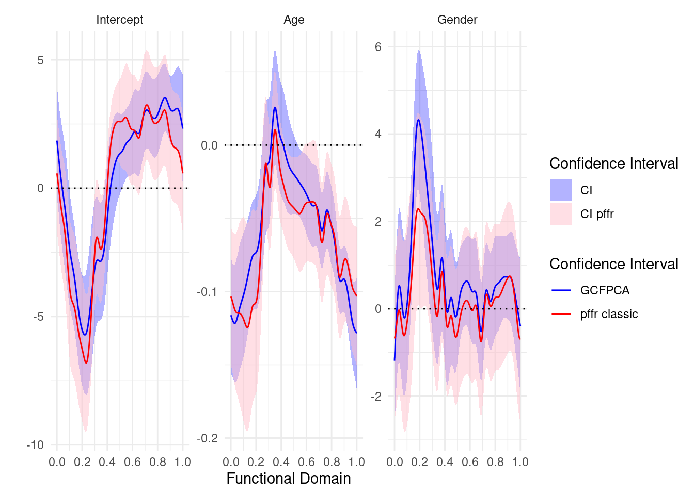
## ----plot_nhanes_eta-----------------------------------------------------------------------------
df_long %>%
mutate(eta_hat = as.vector(nhanes_gcfpca$etas)) %>%
mutate(eta_pffr = as.vector(eta_pffr)) %>%
filter(id %in% c(63529, 67427, 82257)) %>%
ggplot(aes(index, eta_pffr)) +
geom_line() +
geom_line(aes(y = eta_hat), linetype = 2, color = "salmon") +
facet_wrap(~id)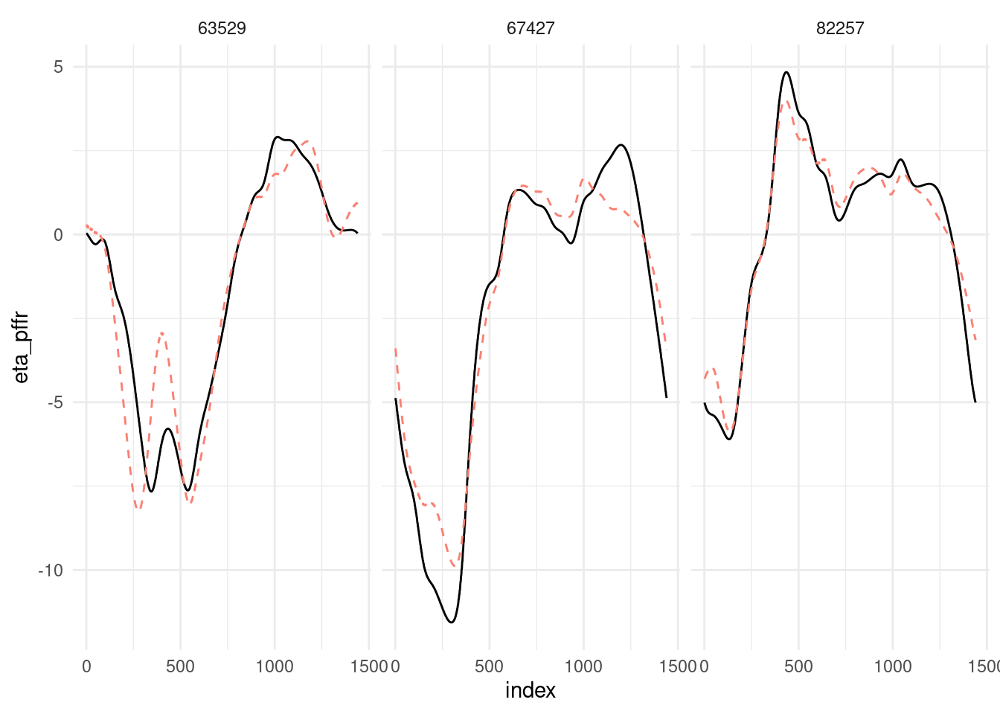
pffr_model <- pffr_model_pc
sind = sort(unique(df_long$index))
df_pred <- data.frame("yindex.vec" = sind,
id = as.numeric(levels(df_long$id))[1],
id.vec = as.numeric(levels(df_long$id))[1],
age = 1, gender = 1) |>
cbind(pffr_model_pc$pffr$pcreterms[[1]]$efunctions)
betahat_pffr <- mgcv::predict.gam(pffr_model, newdata=df_pred, type='iterms', se.fit=TRUE)
CI_L_pffr <- betahat_pffr[[1]] - 1.96 * betahat_pffr[[2]]
CI_U_pffr <- betahat_pffr[[1]] + 1.96 * betahat_pffr[[2]]
eta_pffr <- matrix(pffr_model_pc$linear.predictors, nrow = length(unique(df_long$id)),
ncol = length(unique(df_long$index)))
## ----plot_nhanes_fe, echo = TRUE, fig.show='hold'------------------------------------------------
plot_df <- cbind.data.frame(sind = rep(seq(0, 1, length.out = K), 3),
betahat = c(data.matrix(nhanes_gcfpca$betaHat)),
betahat_pffr = c(data.matrix(betahat_pffr[[1]][, -4])),
X = c(rep("Intercept", K),
rep("Age", K),
rep("Gender", K)),
CI_L_pw = c(data.matrix(nhanes_gcfpca$CI_L_pw)),
CI_U_pw = c(data.matrix(nhanes_gcfpca$CI_U_pw)),
CI_L_joint = c(data.matrix(nhanes_gcfpca$CI_L_joint)),
CI_U_joint = c(data.matrix(nhanes_gcfpca$CI_U_joint)),
CI_L_pffr = c(CI_L_pffr[, -4]),
CI_U_pffr = c(CI_U_pffr[, -4])) %>%
mutate(X = factor(X, levels = c("Intercept",
"Age",
"Gender")))
plot_df %>%
ggplot(aes(x = sind, y = betahat)) +
#geom_ribbon(aes(ymin = CI_L_joint, ymax = CI_U_joint, fill = "CI Joint"), alpha = 0.5) +
geom_ribbon(aes(ymin = CI_L_pw, ymax = CI_U_pw, fill = "CI"), alpha = 0.3) +
geom_ribbon(aes(ymin = CI_L_pffr, ymax = CI_U_pffr, fill = "CI pffr"), alpha = 0.5) +
geom_line(aes(color = "GCFPCA")) +
geom_line(aes(x = sind, y = betahat_pffr, color = "pffr PC")) +
scale_fill_manual(values = c("CI" = "blue", "CI Joint" = "lightblue", "CI pffr" = "pink"), name = "Confidence Interval") +
scale_color_manual(values = c("GCFPCA" = "blue", "pffr PC" = "red"), name = "Confidence Interval") +
# Adding a horizontal dotted line at y = 0
geom_hline(yintercept = 0, linetype = "dotted") +
# Setting x-axis labels to show time
scale_x_continuous(breaks = seq(0, 1, by = 0.2)) +
# Facet the plot by variable X, with 3 columns
facet_wrap(~X, ncol = 3, scales = "free_y") +
# Adding axis labels and title
labs(x = "Functional Domain", y = "", fill = "Confidence Interval")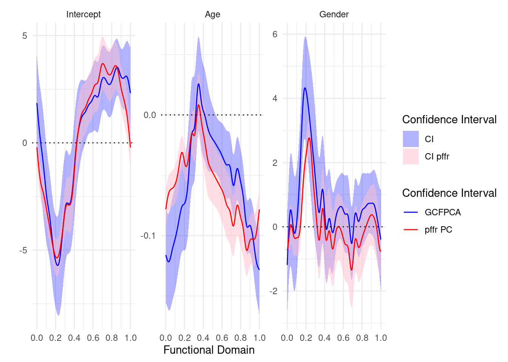
## ----plot_nhanes_eta-----------------------------------------------------------------------------
df_long %>%
mutate(eta_hat = as.vector(nhanes_gcfpca$etas)) %>%
mutate(eta_pffr = as.vector(eta_pffr)) %>%
filter(id %in% c(63529, 67427, 82257)) %>%
ggplot(aes(index, eta_pffr)) +
geom_line() +
geom_line(aes(y = eta_hat), linetype = 2, color = "salmon") +
facet_wrap(~id)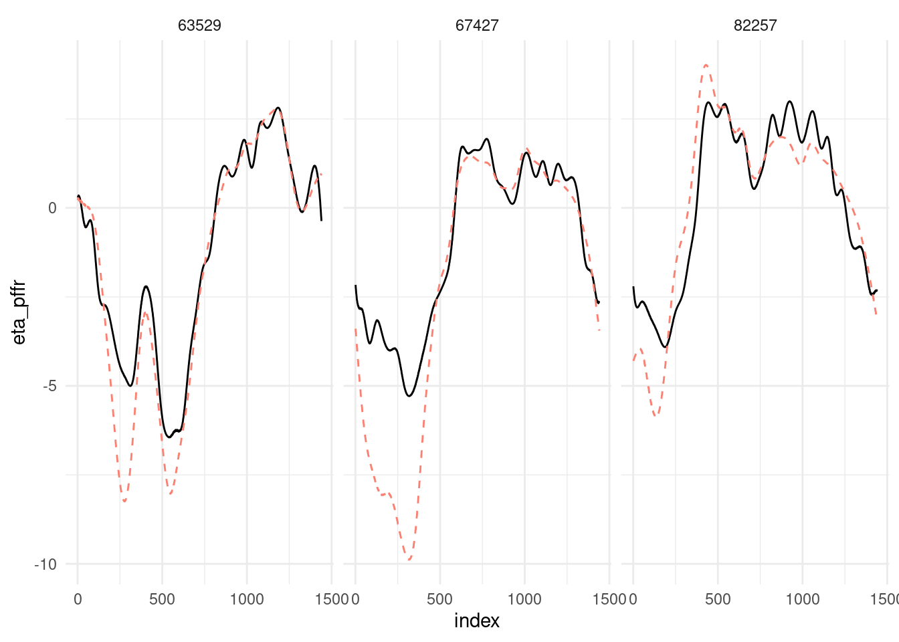